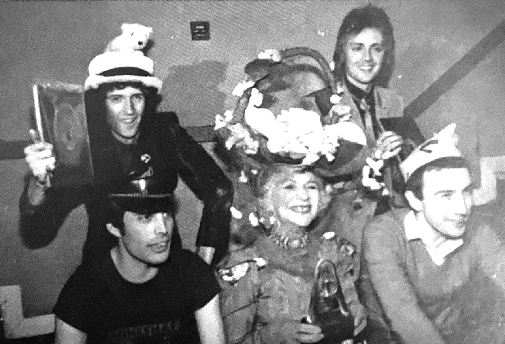
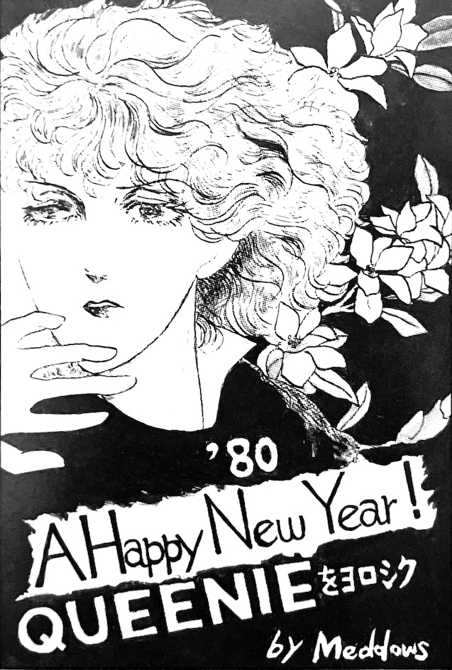

Vol. 16 — Spring 1980

The letters section contains some items about the April 25th, 1979 Budoukan concert that was recorded for TV—nearly a year later, it still hadn't been broadcast, and fans were getting annoyed. This prompted a letter-writing campaign to Nippon TV, who apparently answered that while they had originally planned to broadcast the show in the fall of 1979, they ultimately decided that Queen wasn't popular enough to have their own show and were waiting to splice the footage together with other acts before broadcasting. This, of course, enraged fans even more.
One fan letter complains about the title translation of Crazy Little Thing Called Love, which was A Desire Called Love in Japanese, saying it sounded like the name of a "third-rate porno". There is also a want ad for recording of NHK-FM's "BBC Queen Interview Series", which was apparently broadcast over several episodes of DJ Yoichi Shibuya's show in 1978. Given the timeframe, I'm assuming this was the band's interview with Tom Browne regarding News of the World, but I'm unsure.

There is an entire page of cute cut illustrations in the back, including a submission from known 1980s unofficial fanclub Queenie.